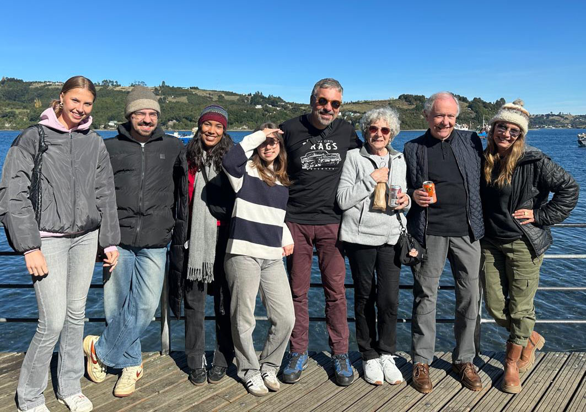
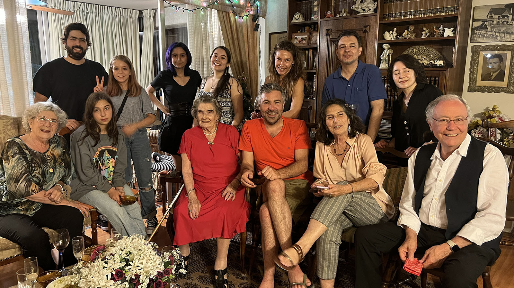
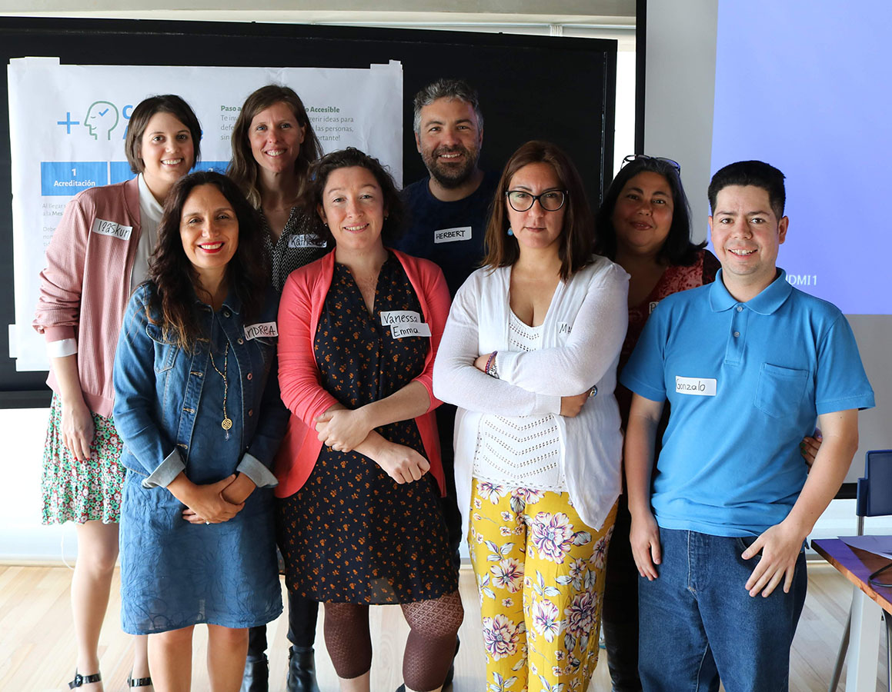
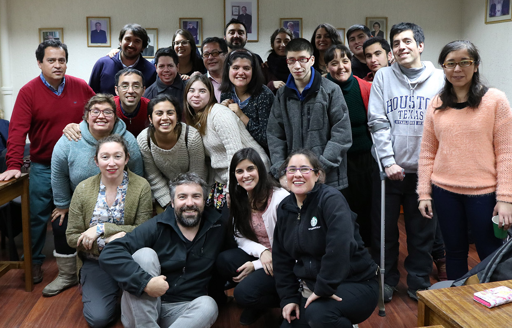

Postgraduate Research Symposium 2025
Towards a Generative Pictographic System for Cognitive Accessibility and Inclusive Communication
- Dr. Marcos Steagall
- Dr. Ivana Nakarada-Kordic
- Dr. Welby Ings

My families and tribes





How can a generative pictographic system be designed to support communication for people with complex communication needs?

Text as Image
PictoNet Generative Pipeline
From text input to adaptive pictogram output
Thank you! any questions or comments?
Herbert Spencer GonzálezPlease continue the conversation: herbert.spencer@aut.ac.nz
This presentation lives at herbertspencer.net/prs.
Source code at github.com/hspencer/prs